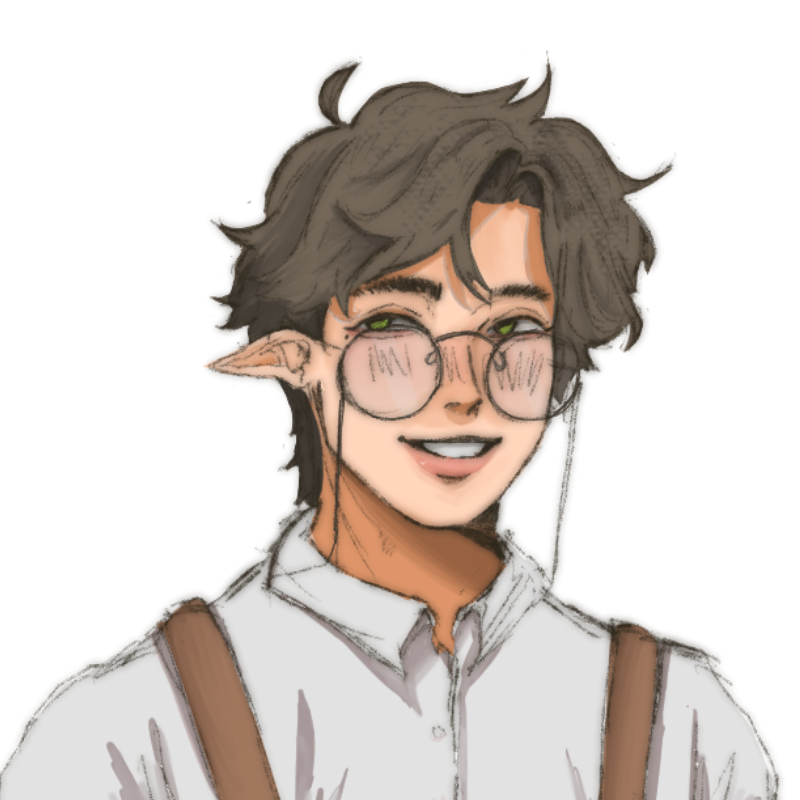

"Allister gets to chat again with his most dearest friend."
'Ephemeral' is a Twine game I created for one of my classes. My assignment was to create a short story about two characters that I've created!
Credits:
He/Him | 25 | Human; Half-Sakrid
Because of his upbringing, Jurius is extremely introverted and tends not to talk to new people and appears cold. While his expressions do not show how he feels, Jurius is an extremely emotional person and is extremely sympathetic towards those who suffer and try to help them. He is also idealistic, as he always imagined and dreamt of leaving Everwatch and explore Veldren. He is sometimes intuitive, doing some things on impulse, such as him escaping the village to make time for himself.
He/Him | 25 | Illuna
Allister appears to be the complete opposite of Jurius, he is very energetic and friendly to everyone he meets. Because he is from a family of merchants, Allister had to learn how to become amicable with everyone no matter how he feels about someone. Apart from tending their family's shop, he loves to go out to the woods to pick up herbs that he then uses for alchemy. Allister is also a very skilled alchemist, even having his own spot in their shop for goods he makes by doing this hobby.
You can play it by clicking this link: Click here
This is a fairly short story I made as a requirement for one of my classes. The story is very rushed, but I still hope you'll have fun reading through it, just as I enjoyed bringing these two to life!
I plan to turn this into a visual novel for people to better visualize the setting and worldbuilding of the world of my OCs, but maybe after I finish an ongoing project. Stay tuned, though!
Go back